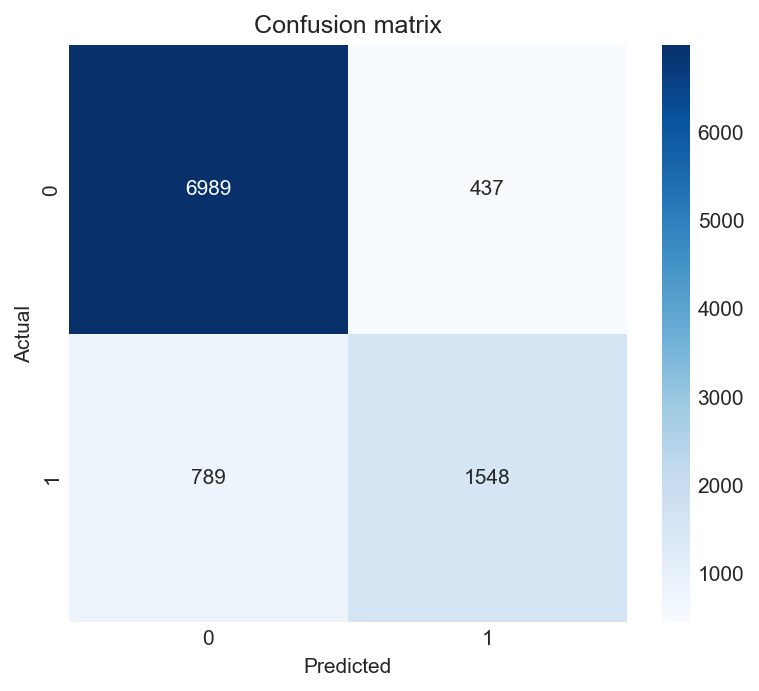
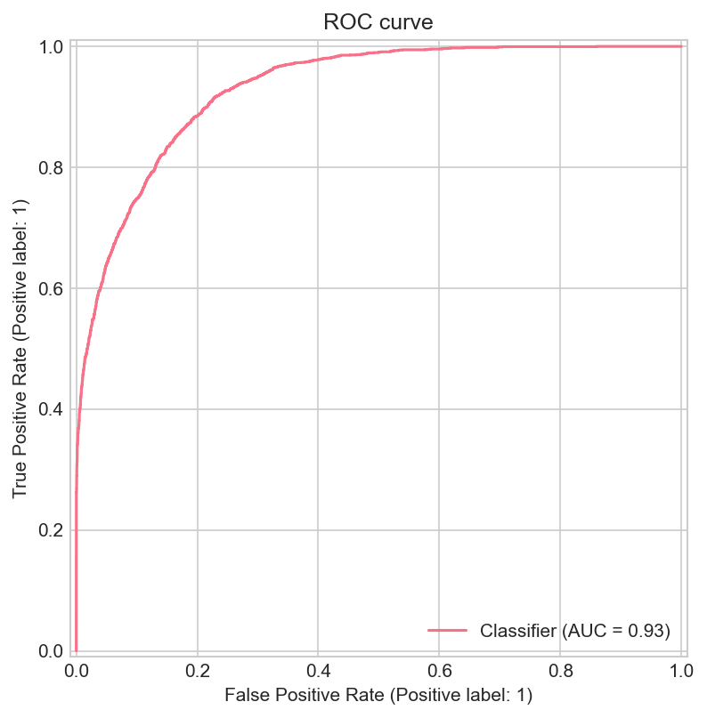
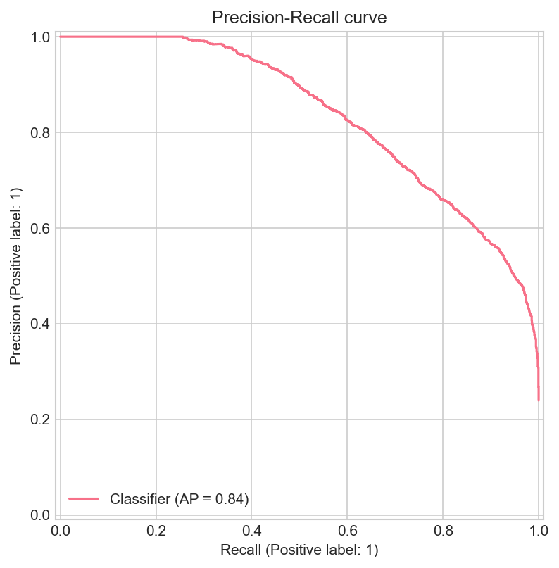
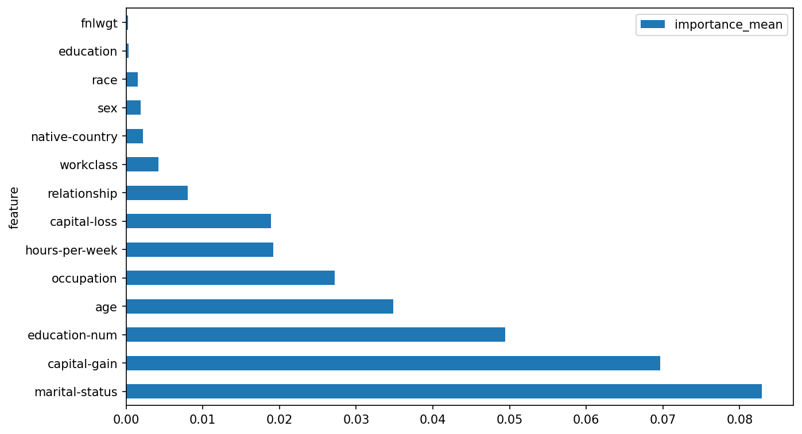
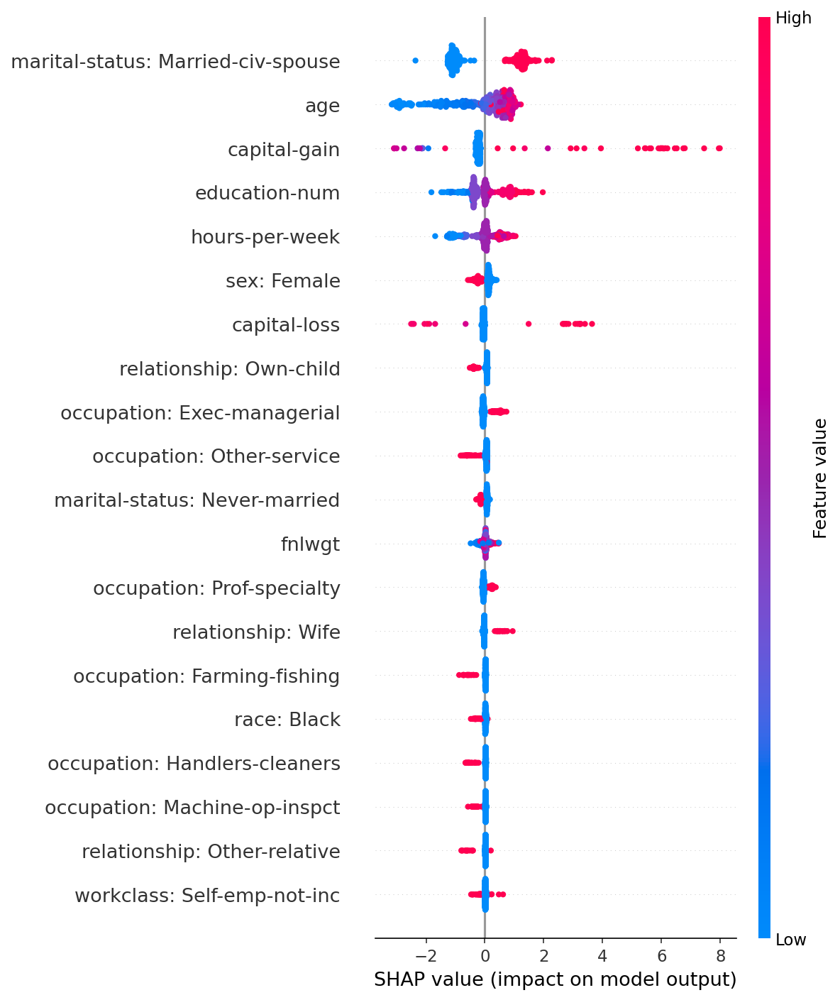
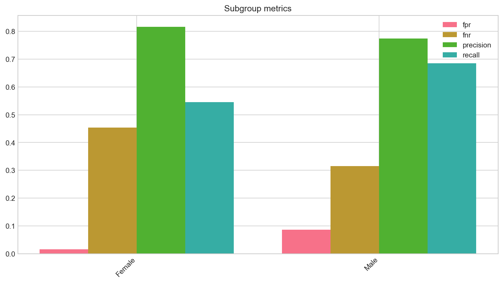
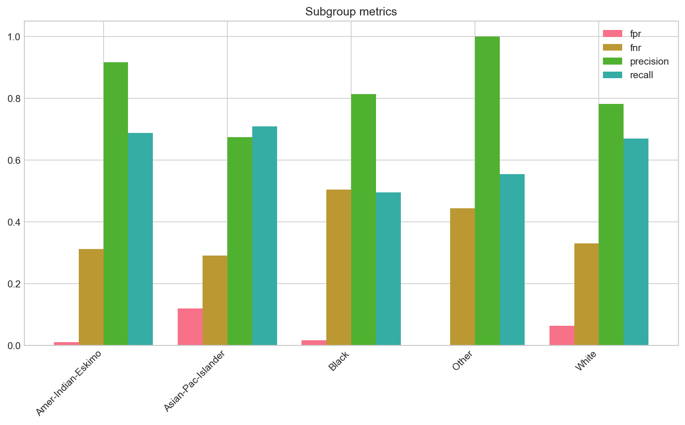
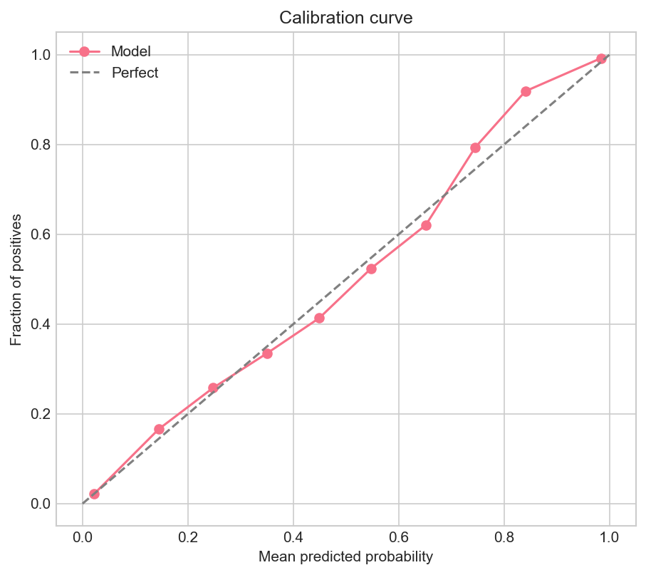

5 Under the Hood & Final Thoughts
A high test macro F1 felt good, but I was not done until I understood why the model worked and who it failed. This chapter covers the single honest test evaluation, interpretability, fairness, calibration, a sensitive-attribute removal experiment, and what I would do differently next time.
5.1 Final evaluation - one pass on the test set
I evaluated the selected LightGBM pipeline once on the held-out test set. Test macro F1 (0.818) landed close to CV macro F1 (0.815), which suggested reasonable generalisation without severe overfitting on this split.
| Metric | Test value |
|---|---|
| Accuracy | 0.874 |
| Balanced accuracy | 0.802 |
| Precision (macro) | 0.839 |
| Recall (macro) | 0.802 |
| F1 (macro) | 0.818 |
| F1 (weighted) | 0.871 |
| ROC-AUC | 0.930 |
| PR-AUC | 0.836 |
| Brier score | 0.087 |
ROC-AUC (0.930) indicated strong ranking ability; PR-AUC (0.836) reflected solid performance on the minority positive class relative to a random baseline.



5.2 Interpretability - what the model actually used
5.2.1 Permutation importance
I shuffled each raw input column and measured the drop in macro F1. The largest decreases landed on marital-status, capital-gain, education-num, and age - exactly the kind of signals I expected after EDA.

5.2.2 SHAP values
The SHAP summary plot now uses human-readable feature labels (for example education: Bachelors, marital-status: Married-civ-spouse) instead of opaque encoded indices. The global pattern was clear: education, marital status, occupation, and age-related splits dominated the tree model’s decisions.

What struck me was how concentrated the importance was - a handful of columns carried most of the signal, consistent with the education and occupation patterns I saw in EDA.
5.2.3 Representative errors
Looking at concrete mistakes helped more than aggregate scores:
- False positives (predicted > $50K, actual <= $50K) often involved married individuals in managerial or professional occupations with moderate hours - profiles that resemble high earners but fall below the threshold in the label.
- False negatives (predicted <= $50K, actual > $50K) included professionals with education and occupation signals the model underweighted relative to other constraints.
Errors clustered at the decision boundary of a coarse income band. The model leans on occupation, education, and family-status proxies.
5.3 Fairness - where overall metrics were not the whole story
When I broke test predictions out by sex, the recall gap was hard to ignore: I was missing high-earning women far more often than high-earning men.
| Group | FPR | FNR | Precision | Recall | Support |
|---|---|---|---|---|---|
| Female | 0.016 | 0.454 | 0.816 | 0.546 | 3,280 |
| Male | 0.086 | 0.315 | 0.774 | 0.685 | 6,483 |
Female records show lower recall (0.546 vs 0.685) and higher false negative rate (0.454 vs 0.315). Male records have higher false positive rate (0.086 vs 0.016). These are observational disparities in this dataset and model - they do not imply causation or deployment policy.

By race, the pattern repeated in a different shape:
| Group | FNR | Recall | Support |
|---|---|---|---|
| Black | 0.504 | 0.496 | 907 |
| White | 0.330 | 0.670 | 8,369 |
Recall for Black individuals (0.496) is lower than for White individuals (0.670), with higher FNR. Smaller groups (e.g. Amer-Indian-Eskimo, n=102) appear in the full table but need cautious interpretation due to sample size.

5.3.1 Intersectional groups
Sex-race intersections tell a finer-grained story. Disparities are visible across cells (e.g. Female|Black vs Male|White recall); cells with small support require extra caution. Full metrics: intersectional table.
Strong overall F1 and unequal subgroup recall can coexist. Fairness auditing is separate from optimising a single score.
5.4 Fairness constraints I did not tune (and why)
Strong test macro F1 did not mean the model treated groups equally. I measured recall gaps, but I did not apply fairness constraints during training. That was deliberate: constraint methods (demographic parity, equalized odds, equal opportunity) need a validation set for threshold or model selection, and this project held out a single test set for one final evaluation.
Demographic parity would ask for similar positive prediction rates across groups, but the dataset itself has very different base rates of high income by sex and race. Equalized odds would push false positive and false negative rates to align across groups - a reasonable production goal, but one that can trade off against overall accuracy. I documented these definitions and the tradeoffs in the fairness constraints essay.
In a deployment setting, I would add a validation fold, define tolerances with stakeholders, and monitor subgroup metrics over time rather than reporting a single aggregate F1 once.
5.5 What would it take to use this in 2026?
The Adult dataset is not a snapshot of today’s labour market. It reflects 1994 census extraction patterns, a fixed $50K income band without inflation adjustment, and feature definitions from a different economic era. Remote work, gig employment, credential inflation, and shifting immigration patterns all mean the joint distribution of features and labels would differ materially if we collected similar data today.
Using this model for hiring, credit, or benefits screening in 2026 would require new representative data, inflation-adjusted or multi-band labels, modern feature schemas, subgroup monitoring in production, and legal review - not a redeploy of a 1994-era classifier with 0.818 macro F1. I wrote a longer essay on external validity and a revalidation protocol for anyone evaluating whether this benchmark generalizes beyond its historical context.
5.6 Calibration - can I trust the probabilities?
The Brier score is 0.087 (lower is better). The reliability curve compares mean predicted probability to observed positive rate across bins.

The model is reasonably well calibrated in mid-to-high probability ranges; extreme bins deserve caution due to smaller bin counts. For ranking and threshold analysis, the probabilities seem usable - policy deployment would need more validation.
5.7 What if I removed sex and race?
I retrained a logistic regression model without sex and race on the same splits to see whether performance would collapse.
| Variant | Accuracy | Macro F1 | ROC-AUC | Brier |
|---|---|---|---|---|
| Full features (LightGBM, final) | 0.874 | 0.818 | 0.930 | 0.087 |
| No sex/race (logistic, extension) | 0.853 | 0.783 | 0.906 | 0.102 |
Removing sensitive fields reduced accuracy by 2.2 percentage points and macro F1 by 3.5 points. Performance did not collapse - occupation, marital-status, education, and related fields likely act as proxies. This extension is diagnostic only; it does not establish fairness of deployment.
5.8 What I learned
Several methodological lessons stuck with me:
- Leakage control - Fitting preprocessing inside CV and holding out one test set avoided optimistic bias. Labelling “CV (train only)” vs “test” explicitly matters in every write-up.
- Metric choice - With ~24% positives, accuracy alone would mask poor minority-class performance; macro F1 and PR-AUC were more informative.
- Model family - Gradient boosting (especially LightGBM) outperformed linear, single-tree, and embedding MLP models on this tabular data.
- Fairness vs accuracy - Strong overall metrics coexist with subgroup recall gaps; fairness auditing is a separate step from tuning one number.
- Traceability - Linking claims to artifacts made the project auditable and easier to revise into this developer log.
5.9 Conclusion
Income above $50K can be predicted with substantial accuracy from census attributes in the Adult dataset: the selected LightGBM model achieves test macro F1 of 0.818 and ROC-AUC of 0.930, using a leakage-safe pipeline and CV-based model selection.
Model family matters - boosting ensembles clearly outperform logistic regression and a PyTorch embedding MLP. Interpretability tools confirm reliance on education, occupation, and demographic proxies. Fairness diagnostics reveal unequal recall and error rates across sex and race subgroups. Calibration is reasonable (Brier 0.087), and removing sex/race reduces performance while proxy features remain informative.
I would answer the main research question in the affirmative for predictive strength within this dataset - with important caveats on subgroup reliability, historical data limits, and non-causal fairness metrics. Future work could include threshold tuning for equalised odds, richer fairness constraints, calibration refitting, and external validation on contemporary survey data.
- Historical data: UCI Adult reflects a specific U.S. survey era; patterns may not transfer today.
- Coarse labels: Binary income bands hide within-class heterogeneity.
- Fairness metrics: Subgroup FPR/FNR/recall describe this model on this test split - not causal fairness guarantees.
- Interpretability: SHAP and permutation importance operate on encoded features.
- Neural models: The PyTorch embedding MLP was not fully optimised; underperformance is not a definitive ceiling for neural tabular methods.
The original academic report and PDF remain unchanged alongside this narrative rewrite.